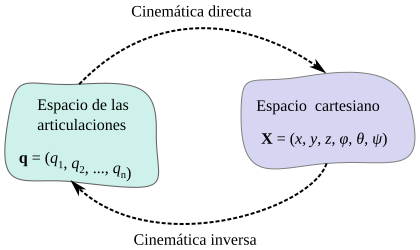
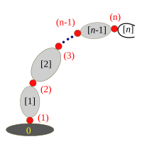
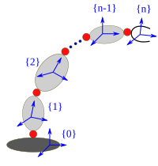
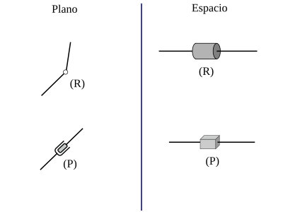
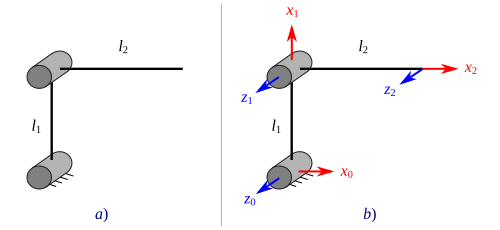
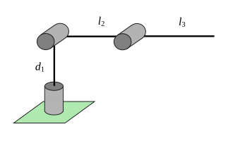
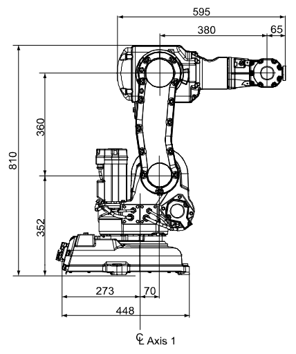

Cinemática directa#
La cinemática directa de manipuladores consiste en determinar la posición y orientación del extremo de un manipulador, a partir de las posiciones articulares. En general suele ser un problema bastante abordable, dado que se sigue una metodología para establecer los sistemas de referencia y con base a esto formar las matrices de transformación homogénea que proporcionan las relaciones entre los mismos.
En la Figura Fig. 25 se muestra un esquema que representa el papel de la cinemática directa e inversa como herramientas para relacionar el espacio cartesiano (asociado con posiciones y orientaciones del elemento terminal) con el espacio de las articulaciones (asociado con las posiciones articulares).
{kind=link}

Fig. 25 Cinemática directa e inversa#
Sobre cadenas cinemáticas y transformaciones#
Un robot manipulador está compuesto de un conjunto de eslabones interconectados mediante juntas (pares cinemáticos). En general, un manipulador serial con \(n\) juntas tendrá \(n+1\) eslabones, dado que cada junta (asumiendo que sean de 1 GDL) conecta dos eslabones.
Para identificar los componentes de un manipulador se numeran las juntas de \(1\) a \(n\) y los eslabones de \(0\) a \(n\), comenzando desde el eslabón base (o referencia fija). Con esta convención, la articulación \(i\) conecta al eslabón \(i-1\) con el eslabón \(i\) (ver Figura Fig. 26).
{kind=link}

Fig. 26 Cadena cinemática, numeración#
Con cada una de las articulaciones se asocia una variable de articulación denotada mediante \(q_i\). En el caso de una junta de revoluta \(q_i\) es el ángulo de rotación, y para un par prismático \(q_i\) es el desplazamiento de la junta.
Para realizar el análisis cinemático se adjunta rígidamente un sistema de referencia a cada eslabón (ver Figura Fig. 27). En particular, se adjunta el sistema \(\{i\}\) al eslabón \(i\), esto implica que para cualquier movimiento que el robot realice las coordenadas de cada punto en el eslabón \(i\) son constantes cuando se expresan o describen con respecto al \(i\)-ésimo sistema de referencia.
{kind=link}

Fig. 27 Cadena cinemática y sistemas de referencia#
La descripción de posición y orientación de \(\{i\}\) en \(\{i-1\}\) se hace mediante una matriz de transformación \(A_i\). Evidentemente la matriz \(A_i\) no es constante puesto que varía cuando lo hace la configuración del manipulador. Sin embargo, dado que cada articulación de los manipuladores a considerar, en este curso, será a lo sumo de un grado de libertad entonces \(A_i\) es función de una sola variable de articulación \(q_i\):
Para un manipulador de \(n\) eslabones y bajo la consideración de que a cada eslabón de la cadena cinemática se le adjunta un sistema de referencia, la posición y orientación del elemento terminal con respecto al sistema de la base, se puede expresar como el producto matricial de todas las matrices de transformación \( A_i \) que describen la totalidad del manipulador:
De manera general, la matriz de transformación homogénea que expresa la posición y orientación del sistema \(\{j\}\) con respecto a \(\{i\}\) se denomina matriz de transformación y se denota mediante \(T_{j}^{i}\). Una matriz de transformación \(T_j^i\) tiene la forma:
Diagramas cinemáticos de manipuladores seriales#
Un diagrama cinemático es una representación simplificada de una cadena cinemática. Este tipo de diagramas sirven para ahorrar tiempo en la esquematización de los dibujos auxiliares para el desarrollo de los análisis cinemáticos de un sistema mecánico. En lugar de un dibujo con \textit{lujo de detalles}, se utilizan líneas y formas geométricas simples para representar eslabones y pares cinemáticos.
A lo largo de este capítulo (y en el resto de estos apuntes) se utilizarán diagramas cinemáticos para representar manipuladores seriales. Dado que los manipuladores seriales que estudiaremos únicamente están conformados por juntas de revoluta (R) y prismáticas (P), nos centraremos en cómo representar este tipo de uniones.
En la Figura Fig. 28 podemos observar la representación en el plano y en el espacio de las juntas de revoluta y prismáticas. Observe que para la revoluta en el espacio se utiliza un cilindro, es importante establecer que la dirección axial del cilindro se debe corresponder con el eje de rotación de la junta de revoluta que se esté representando. En el caso de la junta prismática, se utiliza un prisma rectangular para representarla en el espacio, la dirección más alargada del prisma define la dirección de deslizamiento de dicha junta.
{kind=link}

Fig. 28 Representación de las juntas de revoluta (R) y prismáticas (P)#
Los eslabones se representarán siempre utilizando líneas. Considere que un diagrama cinemático no es un dibujo a escala, ni muestra la forma o geometría específica de los eslabones que conforman el manipulador sino que permite visualizar la manera en que están conectados los eslabones y las distancias entre las articulaciones.
La metodología de Denavit-Hartenberg#
En esta sección se establecerán una serie de convenciones que proporcionan un procedimiento sistemático para el desarrollo del análisis cinemático directo. La metodología de Denavit-Hartenberg (DH) es un procedimiento que permite establecer sistemas de referencia siguiendo algunas reglas básicas que permiten describir las matrices \(A_i\) mediante cuatro transformaciones básicas realizadas en un cierto orden, a las cuales se asocian cuatro parámetros.
Está claro que existen una multitud de posibilidades que proporcionarían una descripción de un sistema transformado respecto a otro, y sería posible realizar un análisis cinemático sin seguir la metodología a describir, sin embargo el análisis cinemático de un manipulador de \(n\) grados de libertad puede llegar a ser extremadamente complejo y sería inconveniente utilizar un procedimiento sin seguir ciertas convenciones.
En la metodología de Denavit-Hartenberg cada transformación \(A_i\) se representa como el producto de cuatro transformaciones básicas:
Donde las cuatro cantidades \(\theta_i\), \(d_i\), \(a_i\) y \(\alpha_i\) son parámetros asociados con el eslabón y la junta \(i\).
Estableciendo los sistemas de referencia#
Las cuatro transformaciones anteriores están asociadas a conjunto de reglas para establecer los sistemas de referencia, mismas que se describirán a continuación.
Establecer \(z_i\)
El eje \(z_i\) de cada sistema de referencia se debe colocar de tal manera que apunte en la dirección del eje de accionamiento de la junta \(i+1\). Considerar que en el caso de una articulación de revoluta el eje de accionamiento será el eje sobre el cual se realiza la rotación y que en el caso de una articulación prismática el eje de accionamiento será la dirección de deslizamiento de la misma. De manera particular, el eje \(z_n\) (extremo del manipulador) deberá colocarse en la misma dirección que \(z_{n-1}\).
El sistema {0}
Una vez se han establecido los ejes \(z\) para toda la cadena cinemática, se procede a establecer el sistema base {0}. El origen \(o_0\) se coloca sobre cualquier punto en \(z_0\). La dirección de \(x_0\) y \(y_0\) son arbitrarias y únicamente deben cumplir el hecho de formar un sistema coordenado derecho.
Sistemas de referencia: de \(\{1\}\) a \(\{n\}\)
Una vez se establecieron los ejes \(z\) y el sistema de referencia base se comienza un proceso iterativo para definir el sistema \( \{i\} \) a partir de \( \{i-1\} \).
Con la finalidad de establecer el sistema de referencia \( \{i\} \) es necesario considerar los tres casos que a continuación se describen:
i. \(z_i\) y \(z_{i-1}\) no son coplanares. Si \(z_i\) y \(z_{i-1}\) no son coplanares entonces existe un único segmento de línea perpendicular a ambos ejes que los conecta y tiene longitud mínima. La línea que contiene a esta normal común a \(z_i\) y \(z_{i-1}\)define la dirección de \(x_i\) y el punto en donde esta linea interseca \(z_i\) es el origen \(o_i\).
ii. \(z_i\) y \(z_{i-1}\) son paralelos. Si \(z_i\) y \(z_{i-1}\) son paralelos entonces existen una cantidad infinita de normales comunes. En general se suele tomar la normal que pasa por \(o_{i-1}\) como la dirección para \(x_i\) y la intersección de dicha normal con \(z_i\)como el origen \(o_i\).
iii. \(z_i\) y \(z_{i-1}\) se intersecan. En este caso \(x_i\) se escoge en la dirección normal al plano formado por \(z_i\) y \(z_{i-1}\), y preferentemente en la dirección de \(z_{i-1} \times z_{i}\). El origen \(o_i\) se coloca en la intersección de \(z_i\) y \(z_{i-1}\).
Existe otro caso adicional, más simple que los anteriores: si \(z_{i-1}\) y \(z_i\) son colineales, entonces el eje \(x_i\) se coloca en la misma dirección que el eje \(x_{i-1}\).
Para todos los casos anteriores la dirección de \(y_i\) se establece de tal manera que complete un sistema coordenado derecho.
La obtención de los parámetros#
Una vez que se han establecido los sistemas de referencia, se procede a formar una tabla de parámetros de Denavit-Hartenberg, conformada por cinco columas: \(i\), \( a_i \), \( \alpha_i \), \( d_i \), \( \theta_i \). En cada una de las filas se colocan los parametros (\(a_i\), \(\alpha_i\), \(d_i\) y \(\theta_i\)) asociados con el \(i\)-ésimo eslabón (ver Table 1). Estos parámetros se obtienen (miden) de los sistemas de referencia establecidos, tomando en consideración lo que a continuación se describe:
El parámetro \( \theta_i \) es el ángulo que hay que rotar alrededor del eje \( z_{i-1} \) para alinear al eje \( x_{i-1} \) con el eje \( x_i \). En el caso de que la i-ésima articulación sea una revoluta, entonces \( \theta_i \) será una variable articular.
El parámetro \( d_i \) es la distancia entre los ejes \( x_{i-1} \) y \( x_{i} \) medida a lo largo del eje \( z_{i-1} \). Si los ejes \( x_{i-1} \) y \( x_{i} \) se intersecan, entonces \( d_i = 0 \). En el caso de que la i-ésima articulación sea de tipo prismática, entonces \( d_i \) será una variable articular.
El parámetro \( a_i \) es la distancia entre los ejes \( z_{i-1} \) y \( z_{i} \) medida a lo largo del eje \( x_{i} \). Si los ejes \( z_{i-1} \) y \( z_{i} \) se intersecan, entonces \( a_i = 0 \).
El parámetro \( \alpha_i \) es el ángulo que hay que rotar alrededor del eje \( x_i \) para alinear al eje \( z_{i-1} \) con el eje \( z_{i} \). Típicamente, en la mayoría de manipuladores este valor será \(90°\) o \(-90°\).
Es importante tener en cuenta que las variables articulares \( q_i \) sólo puede estar asociadas con los paramétros \( d_i \) y \( \theta_i \). Los parámetros \( \alpha_i \) y \( a_i \) siempre serán valores constantes.
La tabla de parámetros que resulta tiene tantas filas como grados de libertad posea el manipulador. En cada fila de la tabla se colocan los parámetros de Denavit-Hartenberg asociados con el \(i\)-ésimo eslabón, y corresponden a la descripción de transformaciones entre los sistemas de referencia \(\{i\}\) e \(\{i-1\}\). Además, es importante considerar que por cada fila de parámetros únicamente tendremos una variable articular (\(q_i\)).
\(i\) |
\(a_i\) |
\(\alpha_i\) |
\(d_i\) |
\(\theta_i\) |
|---|---|---|---|---|
\(1\) |
\(a_1\) |
\(\alpha_1\) |
\(d_1\) |
\(\theta_1\) |
\(2\) |
\(a_2\) |
\(\alpha_2\) |
\(d_2\) |
\(\theta_2\) |
\(\vdots\) |
\(\vdots\) |
\(\vdots\) |
\(\vdots\) |
\(\vdots\) |
\(n\) |
\(a_n\) |
\(\alpha_n\) |
\(d_n\) |
\(\theta_n\) |
Calculando las \(A_i\) y \( T_n^0 \)#
Las matrices \(A_i\) se obtienen cuando se sustituyen cada una de las filas de la tabla de parámetros en la matriz de Denavit-Hartenberg (ecuación (25)). Recuerde que \(A_i = T_i^{i-1}\).
Una vez que se han calculado todas las matrices \(A_i\), se procede a multiplicarlas para determinar a la matriz \( T_n^0 \) que describe la cinemática directa del manipulador. Se debe recordar que está matriz está dada por:
La matriz \( T_n^0 \) depende de todas las variables articulares (\(q_1\), \(q_2\), \(\ldots\), \(q_n\)). Esta matriz nos proporcionará tanto la posición como la orientación del elemento terminal (sistema de referencia \(\{n\}\)) del manipulador con respecto al sistema de la base (sistema \(\{0\}\)).
Ejemplo. Calcule la cinemática directa del manipulador RR mostrado en la Figura Fig. 29a).
{kind=link}

Fig. 29 Manipulador RR#
Solución:
El manipulador planar RR de la Figura Fig. 29a) tiene dos grados de libertad, con los dos ejes de articulación paralelos. Los sistemas de referencia siguiendo la metodología de Denavit-Hartenberg quedarían establecidos como se muestran en la Fig. 29b). Recuerde que el eje \(z_0\) se debe colocar en la junta \(1\), \(z_1\) en la junta \(2\) y \(z_2\) en el extremo del manipulador y apuntando en la misma dirección que el eje \(z\) anterior (\(z_1\)). Observe que dado que \(z_0\) y \(z_1\) son paralelos, entonces el eje \(x_1\) se coloca en la dirección de la normal común a ambos ejes. El mismo caso aplica para colocar a \(x_2\).
Ahora vamos a determinar cada uno de los parámetros de Denavit-Hartenberg. Los parámetros \(\theta_1\) y \(\theta_2\) corresponden a las variables articulares \(q_1\) y \(q_2\), dado que ambas articulaciones son revolutas. El parámetro \(d_1\) recuerde que es la distancia entre los ejes \(x_1\) y \(x_0\), medida en la dirección de \(z_0\), pero dado que estos ejes se intersecan entonces \(d_1=0\). El parámetro \(a_1\) es la distancia entre \(z_0\) y \(z_1\) medida en la dirección de \(x_1\), observe que esta distancia es justamente \(l_1\). El parámetro \(\alpha_1\) es el ángulo que hay que rotar para alinear al eje \(z_0\) con el eje \(z_1\), girando alrededor del eje \(x_1\), se observa que \(z_0\) y \(z_1\) apuntan ya en la misma dirección, por lo cual \(\alpha_1 = 0°\). El parámetro \(d_2\) es la distancia entre los ejes \(x_1\) y \(x_2\), medida en la dirección de \(z_1\), pero dado que se intersecan entonces \(d_2=0\). El parámetro \(a_2\) es la distancia entre los ejes \(z_1\) y \(z_2\) medida en la dirección de \(x_2\), la cual corresponde justamente a \(l_2\). Finalmente, el parámetro \(\alpha_2\) es el ángulo que hay que rotar alrededor del eje \(x_2\) para alinear al eje \(z_1\) con el \(z_2\), se puede notar que los ejes \(z_1\) y \(z_2\) están alineados y por lo tanto \(\alpha_2 = 0°\). Así pues, la tabla de parámetros de Denavit-Hartenberg quedaría de la siguiente manera:
\(i\) |
\(a_i\) |
\(\alpha_i\) |
\(d_i\) |
\(\theta_i\) |
|---|---|---|---|---|
\(1\) |
\(l_1\) |
\(0°\) |
\(0\) |
\(q_1\) |
\(2\) |
\(l_2\) |
\(0°\) |
\(0\) |
\(q_2\) |
Luego, cada matriz de transformación \(A_i\) se obtiene de sustituir los parámetros correspondientes en la matriz de Denavit-Hartenberg (ecuación (25)):
Finalmente, la matriz de transformación que relaciona el extremo del manipulador con la base está dada por la multiplicación de estas matrices:
La matriz anterior se puede simplificar un poco aplicando las siguientes identidades trigonométricas:
Entonces:
Ejemplo. Calcule la cinemática directa del manipulador RRR mostrado en la Figura Fig. 30.
{kind=link}

Fig. 30 Manipulador RRR#
Solución:
El manipulador RRR mostrado en la Figura Fig. 30 tiene tres grados de libertad (posicionamiento). Las direcciones de accionamiento de la primera y segunda articulación son mutuamente perpendiculares, además, las direcciones de la segunda y tercera articulación son paralelas. Los sistemas de referencia quedan establecidos como se muestra en la Figura Fig. 31. Dado que \(z_0\) y \(z_1\) se intersecan, entonces el eje \(x_1\) se coloca en la dirección normal al plano formado por ambos ejes. Los ejes \(z_1\) y \(z_2\) son paralelos, entonces \(x_2\) se coloca en la dirección de la normal común a ambos ejes. Los ejes \(z_2\) y \(z_3\) son paralelos, entonces \(x_3\) se coloca en la dirección de la normal común a ambos ejes.

Fig. 31 Manipulador RRR con los sistemas establecidos#
Con los sistemas establecidos de tal forma, se obtiene la tabla de parámetros de Denavit-Hartenberg:
\(i\) |
\(a_i\) |
\(\alpha_i\) |
\(d_i\) |
\(\theta_i\) |
|---|---|---|---|---|
\(1\) |
\(0\) |
\(90°\) |
\(d_1\) |
\(q_1\) |
\(2\) |
\(l_2\) |
\(0°\) |
\(0\) |
\(q_2\) |
\(3\) |
\(l_3\) |
\(0°\) |
\(0\) |
\(q_3\) |
Entonces, las matrices de transformación \( A_i \) estarán dadas por:
Si multiplicamos \(A_2 A_3\) se tiene:
Aplicando las identidades trigonométricas: \(c_{23} = c_2c_3 - s_2s_3\) y \(s_{23} = s_2c_3 + c_2s_3\), resulta:
Finalmente multiplicando este resultado por \(A_1\), se obtiene la matriz \(T_3^0\):
Ejemplo. Calcule la cinemática directa del manipulador ABB IRB 140 mostrado en la Figura Fig. 32.
{kind=link}

Fig. 32 Dimensiones del robot ABB IRB 140#
Para calcular la cinemática directa de cualquier manipulador industrial, podemos comenzar buscando información acerca de sus dimensiones. En el caso del IRB 140 se puede encontrar información en este enlace. En la Figura Fig. 32 se muestra un esquema con las dimensiones del manipulador. Se debe tener en cuenta que no todas las dimensiones son relevantes para un análisis cinemático; usualmente, son de interés cinemático las distancias entre cada uno de los ejes del robot. Con esta información trazamos un diagrama cinemático que nos servirá para esquematizar nuestros sistemas de referencia de una manera más conveniente.
En la Figura Fig. 33 se muestra el diagrama cinemático del IRB 140, así como los sistemas de referencia ya establecidos, siguiendo las reglas de la metodología de Denavit-Hartenberg. A continuación, listamos las consideraciones para colocar cada uno de los sistemas de referencia.
Cada uno de los ejes \(z\) se coloca en la dirección de accionamiento de las articulaciones. De manera particular, \(z_6\) se coloca de forma paralela a la dirección del eje \(z_5\).
\(z_0\) y \(z_1\) no son coplanares, entonces el eje \(x_1\) se coloca en la dirección de la normal común a ambos ejes.
\(z_1\) y \(z_2\) son paralelos, por lo tanto el eje \(x_2\) se coloca en la dirección de la normal común que pasa por el origen de \(\{1\}\).
\(z_2\) y \(z_3\) se intersecan, entonces el eje \(x_3\) se coloca en una dirección que es normal al plano formado por estos ejes.
\(z_3\) y \(z_4\) se intersecan, por lo tanto el eje \(x_4\) se establece en una dirección normal al plano formado por estos ejes.
\(z_4\) y \(z_5\) se intersecan, entonces el eje \(x_5\) se coloca en dirección normal al plano formado por ambos ejes.
\(z_5\) y \(z_6\) son colineales, por lo tanto el eje \(x_6\) se coloca de forma alineada con \(x_5\). No obstante, es importante comprender que esa alineación no es permanente, dado que el ángulo que se forma entre \(x_5\) y \(x_6\) corresponde a la variable articular \(q_6\).

Fig. 33 Diagrama cinemático del manipulador ABB IRB 140#
Una vez establecidos los sistemas de referencia, procedemos a obtener la tabla de parámetros:
\(i\) |
\(a_i\) |
\(\alpha_i\) |
\(d_i\) |
\(\theta_i\) |
|---|---|---|---|---|
\(1\) |
\(70\) |
\(90°\) |
\(352\) |
\(q_1\) |
\(2\) |
\(360\) |
\(0°\) |
\(0\) |
\(q_2\) |
\(3\) |
\(0\) |
\(90°\) |
\(0\) |
\(q_3\) |
\(4\) |
\(0\) |
\(-90°\) |
\(380\) |
\(q_4\) |
\(5\) |
\(0\) |
\(90°\) |
\(0\) |
\(q_5\) |
\(6\) |
\(0\) |
\(0°\) |
\(65\) |
\(q_6\) |
Sustituyendo cada fila de parámetros en la matriz de Denavit-Hartenberg obtenemos cada una de las matrices \(A_i\):
La matriz \( T_6^0 \) está dada por:
donde: